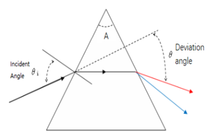

This calculator will help you calcaulate the minimum deviation angle of (triangular) prisms with a certain wavelength.

$n$ = $\frac{sin\frac{A+\theta}{2}}{sin\frac{A}{2}}$
Top Angle of The Prism $A$; Reflective Index n; Minimum Deviation Angle $\theta$